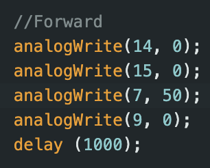

The purpose of Lab 4, was to connect our motor driver controllers to our car and start working on open loop
control of our car. The motor drivers will be used to control our car.
Lab Set-up/Prelab
For the prelab of this class we learnt how to use an oscilloscope and connect our Artemis board to our motor
drivers. I also planned out which pins I would use on my artemis board for the two motor drivers and filled in the
wiring diagram with color coding.
Above is the wiring diagram for the two motor drivers. The input and output pins for each motor driver are
connected in parallel to eachother to maximize current drawn. The two VIN and GND pins on the motor drivers are
connected
to each other and then connected to the 850 mAh battery. One of the GND pins on one of the motor drivers is
connected to GND on the artemis. For the two input pins on each motor driver, I chose Pin 7, 9 and Pin 14, 15 on
the
Artemis respectively.
Battery discussion
The artemis and the motor drivers are connected to different batteries. The artemis uses a 750 mAh battery while
the motors use a 850 mAh battery. This allows each component to function independently and not affect each other
and increase noise.
Further, the motor drivers require more power than the artemis.
Testing One Motor Driver
First, I soldered the input/output pins of one of the motor drivers. I connected the OUT1 pins to ground and the
OUT2 pins to an oscilloscope probe. Then, I supplied power using a DC power
source and checked the oscilloscope output for the driver. I chose to set the voltage to 3.7V since that is what
our batteries provide. The waveform seen on the oscilloscope is below.
Spinning Wheels
Once I had tested the motor drivers using an oscilloscope, I started taking apart the car and placing my
electronic components inside. I removed the PCB board and LEDs from the car. I then taped the hardware components
on the car.
Once I had soldered the motor drivers to the motors in the car I used an external power supply to test the
spinning of the car wheels. I tested one set of wheels at a time, and also took a note of the current being drawn
by each wheel to ensure that they weren't drawing too much current. I set the voltage of the power supply to 3.7V
since that is what our battery also provides. I tested both forward and backward spin of the wheels. Once I was
sure that both wheels worked independently, I soldered the VIN and GND pins of the two wheels to each other and
tested that they run together with the power supply. A video of the two wheels running together can be seen below:
After testing that both wheels work together using an external power supply, I soldered the joint VIN and GND pins
of the motor drivers to the respective leads of the battery in the car. I then connected m charged 850 mAh battery
and tested that the wheels spin correctly with the battery. I also tested that the wheels work independently with
the battery.
Once I was sure that all the compoenents on the car were working as expected, I secured them in the car. I placed
the two ToF sensors on the front and back of the car respectively. I chose not to place one on the side of the car
since I felt that the wheels of the car were interfering with the sensor. I placed the IMU on the front of the car
on top of the battery area to make sure that it is on a flat level surface. At the back of the car I placed my
Artemis along with its battery and the 2 motor drivers. I placed my breakout board in the middle of the car. An
image of all the hardware componenet is shown below:
Lower-limit PWM
When the battery of my car was fully charged I tested the different PWM values required to get the wheels of my
car to spin, i.e. the minimum PWM needed to overcome friction. For the left wheels, I found that the minimum PWM
to be 40, 35 for pin 7, 9 respectively. For the right values, the lowest PWM was slightly higher, 45, 50. This was
also in line with my previous experiments where I noticed that the right wheels showed slightly more resistance
than the left wheels. Some videos of these lower limit PWMs can be seen below:

Task 6: Calibration
When I ran my car on the floor initially, I noticed that is was unable to go forward in a straight line and would
move slightly left when moving forward. From this observation, I decided to calibrate the left wheels of my car. I
tested out a few different calibration factors, from 1.1 upto 1.5. I found that a calibration factor of 1.2 led to
the most straight forward motion for my car. Since the left side of my car had more resistance as noticed before,
increasing its PWM slighly led to more even spinning of my wheels.
Task 7: Open Loop Control
After calibrating the wheels on my robot, I wrote some code that tested my cars turning capabilities. I wrote some
code in which my car moves forward, turns right, turns left, and moves backwards. For turning, I paired the wheels
on opposite motors and set them to HIGH. A video of this can be seen below:
Additional 5000 Level Tasks
analogWrite() frequency/PWM discussion
When checking on the oscilloscope, the measured time period was found to be 5.44 ms. This corresponds to a
frequency of 183.8 Hz. Since our motor drivers sample at 50 kHz, this should be fast enough for our motors.
Experimentally, I found that a PWM value of 40 was found to be low enough to allow the car to move. This PWM value
is enough to sustain movement after approx 1.5 seconds.
Conclusion
This lab was very demanding in terms of soldering/hardware. I initally had a hard time getting the wheels on my
car to spin and realised that my soldered connections were quite weak. Once I had resoldered and reinforced these
connections however, I was able to get the wheels to spin much better. I also had an issue where the settings on
the DC power supply in the lab was limiting the current my wheels were drawing. However, once I used a different,
non current limiting channel the wheels worked much better.
References
I referenced Nila Narayan and Mikayla Lahr's work for Lab 4.